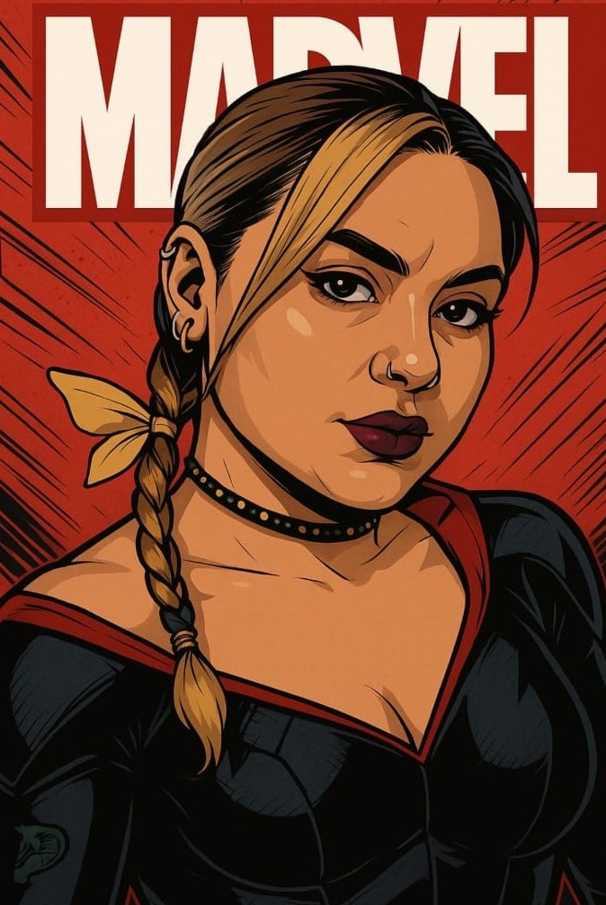

Visual básico, lindo!
Que a vida seja sempre a somatória de todos os seus dias felizes! Se continuar com esse seu jeito único, nunca te faltarão momentos maravilhosos!
Como heroína Marvel!
Nasci da criatividade desse certo alguém que insiste em não se achar o máximo!
O que falar sobre você?
Sinta-se à vontade para expandir a história, adicionar reflexões ou qualquer conteúdo que desejar.